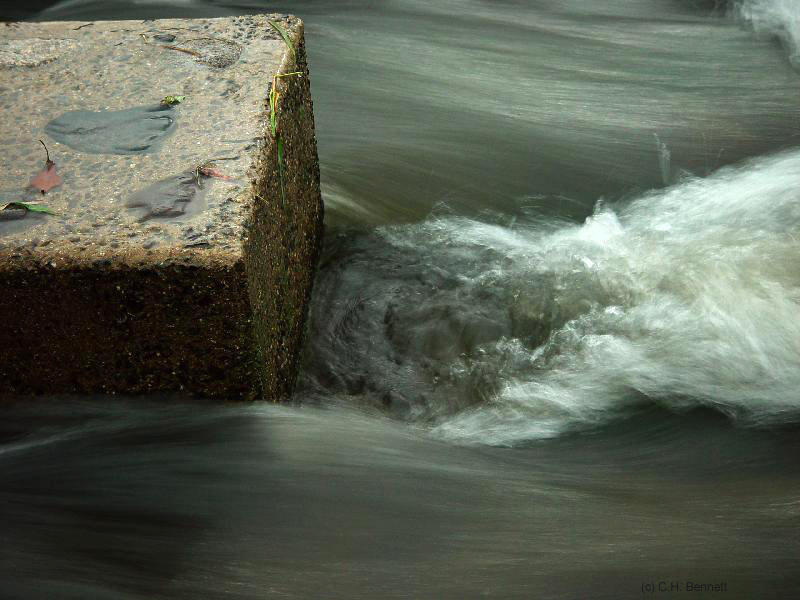

Shower Curtain UCSB 1977 Broken Window 1980
Dishwater MRT 1975
Boat, Croton Dam Spillway 1990
Plant Saucers 1975
Lace Curtain 1968
Shower Curtain UCSB
1977
Broken Window 1980
Fog Moon 2000
Night Snowdrift 2001

Stepping Stone and Wake, Kyoto 2003

Amawalk Spillway 1/'04